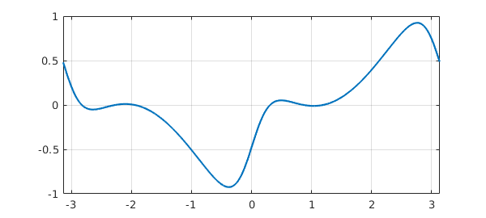
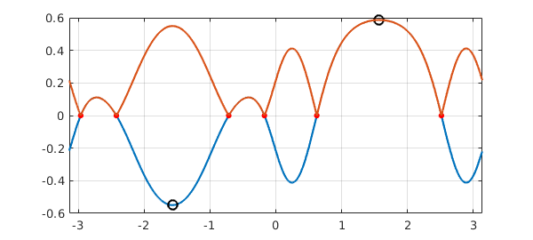
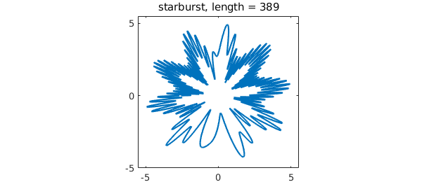

11.1 What is a chebfun2?
A chebfun2 is a function of two variables defined on a rectangle $[a,b]\times[c,d]$. The syntax for chebfun2 objects is similar to the syntax for matrices in MATLAB, and Chebfun2 objects have many MATLAB commands overloaded. For instance, trace(f) returns the sum of the diagonal entries when $f$ is a matrix and the integral of $f(x,x)$ when $f$ is a chebfun2.
Chebfun2 builds on Chebfun's univariate representations and algorithms. It is the first extension of Chebfun to functions of two variables. Algorithmic details are given in [Townsend & Trefethen 2013b].
The implementation of Chebfun2 exploits the observation that many functions of two variables can be well approximable by low rank approximants. A rank $1$ function is of the form $u(y)v(x)$, and a rank $k$ function can be written as the sum of $k$ rank $1$ functions. Smooth functions tend to be well approximated by functions of low rank. Chebfun2 determines low rank function approximations automatically by means of an algorithm that can be viewed as an iterative application of Gaussian elimination with complete pivoting [Townsend & Trefethen 2013]. The underlying function representations are related to work by Carvajal, Chapman and Geddes [Carvajal, Chapman, & Geddes 2008] and others including Bebendorf [Bebendorf 2008], Hackbusch, Khoromskij, Oseledets, and Tyrtyshnikov.
11.2 What is a chebfun2v?
Chebfun2 can represent scalar valued functions, such as $\exp(x+y)$, and vector valued functions, such as $[\exp(x+y);\cos(x-y)]$. A vector valued function is called a chebfun2v, and chebfun2v objects are useful for computations of vector calculus. For information about chebfun2v objects and vector calculus, see Chapters 14 and 15 of this guide.
11.3 Constructing chebfun2 objects
A chebfun2 is constructed by supplying the Chebfun2 constructor with a function handle or string. The default rectangular domain is $[-1,1]\times [-1,1]$. (An example showing how to specify a different domain is given at the end of this chapter.) For example, here we construct and plot a chebfun2 representing $\cos(xy)$ on $[-1,1]\times[-1,1]$.
f = chebfun2(@(x,y) cos(x.*y)); plot(f), zlim([-2 2])

There are several commands for plotting a chebfun2, including plot, contour, surf, and mesh. Here is a contour plot of $f$:
contour(f), axis square

One way to find the rank of the approximant used to represent $f$ like this:
length(f)
ans =
7
Alternatively, more information can be given by displaying the chebfun2 object:
f
f =
chebfun2 object: (1 smooth surface)
domain rank corner values
[ -1, 1] x [ -1, 1] 7 [0.54 0.54 0.54 0.54]
vertical scale = 1
The corner values are the values of the chebfun2 at $(-1,-1)$, $(-1,1)$, $(1,-1)$, and $(1,1)$, in that order. The vertical scale is used by operations to aim for close to machine precision relative to that number.
11.4 Basic operations
Once we have a chebfun2, we can compute quantities such as its definite double integral:
sum2(f)
ans = 3.784332281468732
This matches well the exact answer obtained by calculus:
exact = 3.784332281468732
exact = 3.784332281468732
We can also evaluate a chebfun2 at a point $(x,y)$, or along a line. When evaluating along a line a chebfun is returned because the answer is a function of one variable.
Evaluation at a point:
x = 2*rand - 1; y = 2*rand - 1; f(x,y)
ans = 0.999492965776269
Evaluation along the line $y = \pi/6$:
f(:,pi/6)
ans =
chebfun row (1 smooth piece)
interval length endpoint values
[ -1, 1] 11 0.87 0.87
Epslevel = 8.096942e-15. Vscale = 1.000000e+00.
There are plenty of other questions that may be of interest. For instance, what are the zero contours of $f(x,y) - .95$?
r = roots(f-.95);
plot(r), axis square, title('Zero contours of f-.95')

What is the partial derivative $\partial f/\partial y$?
fy = diff(f,1,1); plot(fy)

The syntax for the diff command can cause confusion because we are following the matrix syntax in MATLAB. We also offer diffx(f,k) and diffy(f,k), which differentiate $f(x,y)$ with respect to the first first and second variable $k$ times, respectively.
What is the mean value of $f(x,y)$ on $[-1,1]\times[-1,1]$?
mean2(f)
ans = 0.946083070367183
11.5 Chebfun2 methods
There are over 100 methods that can be applied to chebfun2 objects. For a complete list type:
methods chebfun2
Methods for class chebfun2: abs exp mean2 sin cdr feval median sinh chebfun2 fevalm min size chebpoly2 flipdim min2 sph2cart chebpolyplot fliplr minandmax2 sphere chebpolyplot2 flipud minus sqrt chebpolyval2 fred mldivide squeeze chol get mrdivide std complex grad mtimes std2 conj gradient norm subsref constructor horzcat pivotplot sum contour imag pivots sum2 contourf integral plot surf cos integral2 plus surface cosh isempty pol2cart surfacearea ctranspose isequal potential svd cumprod isreal power tan cumsum iszero prod tand cumsum2 jacobian qr tanh dblquad lap quad2d times del2 laplacian quiver trace diag ldivide quiver3 transpose diff length rank uminus diffx log rdivide uplus diffy lu real vertcat discriminant max restrict volt display max2 roots waterfall ellipsoid mean simplify Static methods: chebpts2 outerProduct vals2coeffs coeffs2vals paduaVals2coeffs
Most of these commands have been overloaded from MATLAB. More information about a Chebfun2 command can be found with help; for instance
help chebfun2/max2
MAX2 Global maximum of a CHEBFUN2.
Y = MAX2(F) returns the global maximum of F over its domain.
[Y, X] = MAX2(F) returns the global maximum in Y and its location X.
For certain problems this problem can be slow if the MATLAB Optimization
Toolbox is not available.
See also MIN2, MINANDMAX2.
11.6 Object composition
So far, in this chapter, chebfun2 objects have been constructed explicitly via a command of the form chebfun2(...). Another way to construct new chebfun2 objects is by composing them together with operations such as +, -, .*, and .^. For instance,
x = chebfun2(@(x,y) x, [-2 3 -4 4]); y = chebfun2(@(x,y) y, [-2 3 -4 4]); f = 1./( 2 + cos(.25 + x.^2.*y + y.^2) ); contour(f), axis square

11.7 Analytic functions
An analytic function $f(z)$ can be thought of as a complex valued function of two real variables, $f(x,y) = f(x+iy)$. If the Chebfun2 constructor is given an anonymous function with one argument, it assumes that argument is a complex variable. For instance,
f = chebfun2(@(z) sin(z)); f(1+1i), sin(1+1i)
ans = 1.298457581415977 + 0.634963914784736i ans = 1.298457581415977 + 0.634963914784736i
These functions can be visualised by using a technique known as phase portrait plots. Given a complex number $z = re^{i\theta}$, the phase $e^{i\theta}$ can be represented by a colour. We follow Wegert's colour recommendations [Wegert 2012], using red for a phase $i$, then yellow, green, blue, and violet as the phase moves clockwise around the unit circle. For example,
f = chebfun2(@(z) sin(z)-sinh(z),2*pi*[-1 1 -1 1]); plot(f)

Many properties of analytic functions can be visualised by these types of plots [Wegert 2012], such as the location of zeros and their multiplicities. Can you work out the multiplicity of the root at z=0 from this plot?
At present, since Chebfun2 only represents smooth functions, a trick is required to draw pictures like these for functions with poles [Trefethen 2013]. For functions with branch points or essential singularities, it is currently not possible in Chebfun2 to draw phase plots.
11.8 What to do now
To find out more about Chebfun2 you can continue reading this guide, or have a look at the Chebfun2 Examples. This guide and the Chebfun2 Examples are written as publishable m-files. For instance, you can publish this chapter of the guide by typing publish('guide11.m').
11.9 References
[Bebendorf 2008] M. Bebendorf, Hierarchical Matrices: A Means to Efficiently Solve Elliptic Boundary Value Problems, Springer, 2008.
[Carvajal, Chapman, & Geddes 2008] O. A. Carvajal, F. W. Chapman and K. O. Geddes, Hybrid symbolic-numeric integration in multiple dimensions via tensor-product series, Proceedings of ISSAC'05, M. Kauers, ed., ACM Press, 2005, pp.84-91.
[Townsend & Trefethen 2013] A. Townsend and L. N. Trefethen, Gaussian elimination as an iterative algorithm, SIAM News, March 2013.
[Townsend & Trefethen 2013b] A. Townsend and L. N. Trefethen, An extension of Chebfun to two dimensions, SIAM Journal on Scientific Computing, 35 (2013), C495-C518.
[Trefethen 2013] L. N. Trefethen, Phase Portraits for functions with poles, http://www2.maths.ox.ac.uk/chebfun/examples/complex/html/PortraitsWithPoles.shtml
[Wegert 2012] E. Wegert, Visual Complex Functions: An Introduction with Phase Portraits, Birkhauser/Springer, 2012.